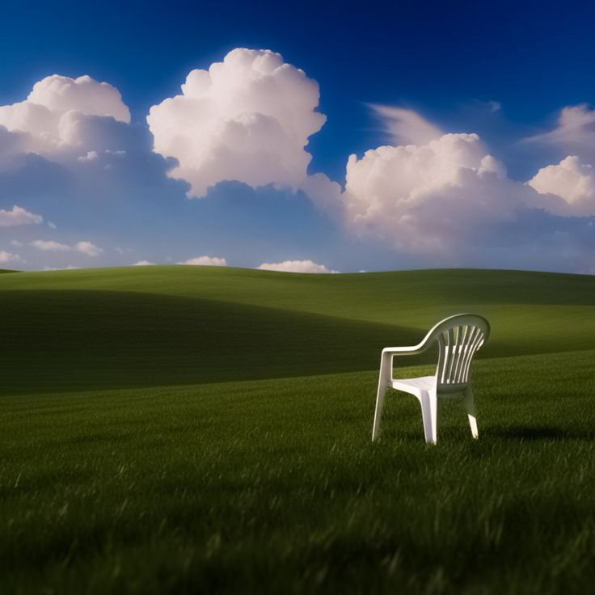

A cadeira sempre esteve aí
Você já se sentou aqui. Antes de saber o que era você.
Você reconhece esta grama. Não porque já pisou nela. Mas porque ela já pisou em você. A cadeira está exatamente onde sempre esteve. Não foi deixada. Não foi esquecida. Ela foi colocada. E você sabe por quem. Pensa. Não pensa. Pensa. Você já esteve aqui. Não nesta vida. Antes.